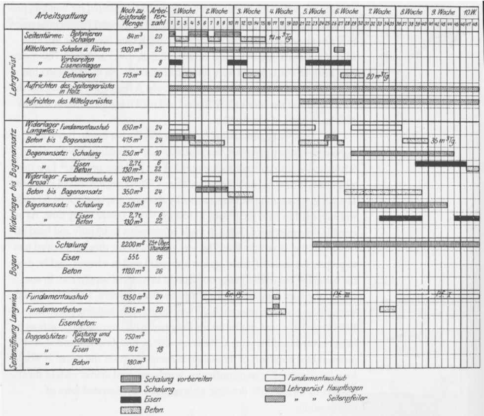
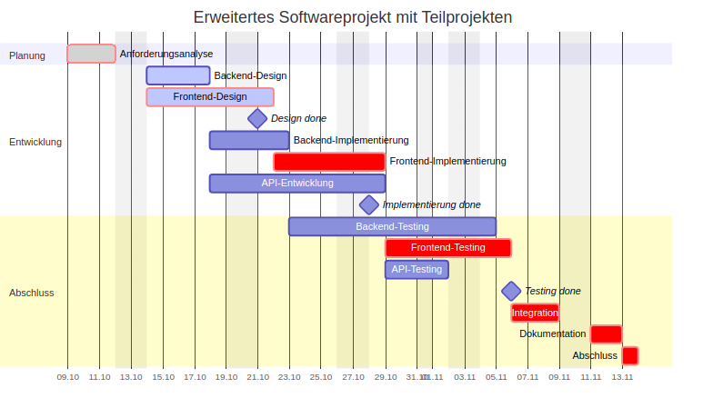
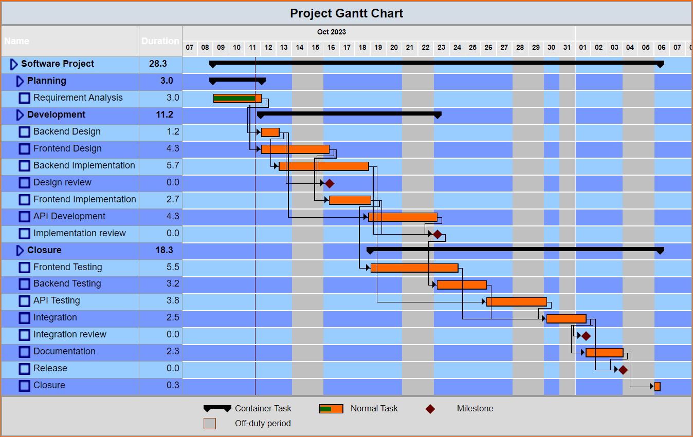

KOM-ITIL
Gantt-Diagramme sind ein beliebtes Werkzeug im Projektmanagement. Sie bieten eine visuelle Darstellung des Zeitplans eines Projekts.
Das Gantt-Diagramm wurde erstmals von Henry Gantt um 1910 entwickelt.

| Arbeitspaket | Dauer (Tage) | 1 | 2 | 3 | 4 | 5 | 6 | 7 | 8 | 9 | 10 | 11 | 12 | 13 | 14 | 15 | 16 | 17 | 18 | 19 | 20 | |
|---|---|---|---|---|---|---|---|---|---|---|---|---|---|---|---|---|---|---|---|---|---|---|
| Anforderungsanalyse | 3 | X | X | X | ||||||||||||||||||
| Backend-Design | 4 | X | X | X | X | |||||||||||||||||
| Frontend-Design | 6 | X | X | X | X | X | X | |||||||||||||||
| Backend-Implementierung | 3 | X | X | X | ||||||||||||||||||
| Frontend-Implementierung | 5 | X | X | X | X | X | ||||||||||||||||
| API-Entwicklung | 7 | X | X | X | X | X | X | X | ||||||||||||||
| Backend-Testing | 8 | X | X | X | X | |||||||||||||||||
| Frontend-Testing | 5 | X | X | X | X | |||||||||||||||||
| API-Testing | 3 | X | X | X | ||||||||||||||||||
| Integration | 3 | X | ||||||||||||||||||||
| Dokumentation | 2 | X | ||||||||||||||||||||
| Abschluss | 1 | X | ||||||||||||||||||||

